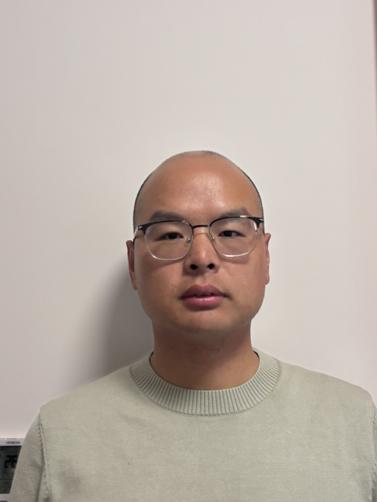

Contacts
+86 17315522050
1995-04-23
maoxq324@gmail.com
www.linkedin.com/in/maoxiangqian
https://maoxiangqian.github.io
Languages
English: Professional Working
Chinese: Native or Bilingual
Certifications
Software Designer: Intermediate Level
Education
Northeast Petroleum University Bachelor’s degree
Electronic Information Engineering ( - )
Courses
Responsive Web Design (freeCodeCamp)
Relational Databases (freeCodeCamp)
Python (freeCodeCamp)
JavaScript (freeCodeCamp)
Xiangqian Mao
Senior C++ & Qt Developer | 7+ Years Experience | Linux & Full-Stack Web | Remote Worldwide
Suzhou, Jiangsu, China
Summary
I am a senior Software Developer focused on C++ and Qt, with 7 years of experience developing embedded instruments and industrial machines (such as vision measurement systems and medical devices) for Linux and Windows environments, and experience in full-stack web development.
I have developed real-world projects including desktop applications using Qt and web applications with JavaScript, working across both frontend and backend. I am comfortable working in Linux and Windows environments and handling databases such as MySQL, PostgreSQL, and SQLite. My technical skills include C, C++, Qt, JavaScript, Python, Linux, and SQL. I enjoy building practical systems and continuously improving code quality and performance.
I am currently seeking opportunities as a C++ Developer or Full-Stack Engineer, and I am open to remote roles worldwide or international positions.
Skills
Software Development
Infrastructure & Tools
Experience
Software Engineer — Suzhou Vinno Technology
-
- Designed and developed software systems for ultrasound endoscope devices, including system architecture, modular design and implementation, device integration, and database design (SQLite).
- Designed and implemented core modules: patient management; user management; medical record management; system configuration; device management.
- Compiled C++ libraries from source and performed cross-compilation to produce ARM Linux and Windows binaries from an x86 Linux build environment.
- Led UX/UI design and development across Qt, Flutter, and web platforms.
- Optimized image processing pipelines with GPU and multithreading for large-scale data.
- Designed and implemented inter-process communication mechanisms for multi-process coordination.
- Conducted code reviews, maintained technical documentation, and developed unit tests.
Senior Software Engineer — Wuxi Research Institute of Huazhong University of Science and Technology (HUST)
-
- Designed and developed a 2D contour measurement tool for 3D point cloud processing (C++, Qt): contour detection, extraction, and analysis.
- Led system and architecture design; defined modular structure, data flow, and component interactions.
- Built a cross-platform (Windows/Linux) graphics system supporting interactive editing, geometric primitives, and real-time visualization.
- Implemented fully interactive UI features with movable graphics and real-time measurement updates.
- Developed 2D contour measurement and feature extraction (length, radius, area, centroid) for industrial inspection.
- Designed data persistence supporting JSON; TXT; XML; databases.
- Integrated with real-time 3D scanning systems and deployed to production.
Software Engineer — Suzhou Huaxing Yuanchuang Technology Co., Ltd.
-
- Designed and developed a suite of Qt-based tools for semiconductor testing.
- Built a high-performance data management tool for handling and visualizing large-scale test data (millions of rows).
- Processed and analyzed large-scale semiconductor test data; designed efficient extraction methods.
- Produced and maintained technical documentation: system design documents, API specifications, and user manuals.
Projects
2D Contour Measurement Tool for 3D Point Cloud Processing
- Production‑grade C++/Qt application that extracts, measures, and analyzes 2D contours from 3D point clouds for industrial inspection. Combines noise‑tolerant contour detection, real‑time measurement (length, radius, area, centroid), interactive cross‑platform graphics, and low‑latency scanner integration. Designed for maintainability, extensibility, and production deployment.
- Modular pipeline: ingestion → preprocessing → 2D projection → contour extraction → measurement → visualization → persistence.
- Algorithms: outlier removal, voxel downsampling, adaptive smoothing; depth‑map edge detection + graph tracing with subpixel refinement.
- Measurements: length, radius (RANSAC circle/arc fit), area (shoelace), centroid; confidence metrics and incremental recompute.
- UI and graphics: OpenGL/SceneGraph overlays, movable primitives, snapping, undo/redo, live recalculation, contextual tools.
- Persistence and integration: JSON/TXT/XML exports, SQL backends;
- C++ · Qt · OpenGL · Windows · GoogleTest
Full-Stack Development of an Ultrasound Endoscopy Software System
- I designed and developed a complete software system for medical ultrasound endoscope devices, covering system architecture, modular design, and full implementation.
- The system includes core modules such as patient management, user management, medical records, device management, and system configuration, with a reliable database layer built on SQLite.
- I handled cross-platform development by compiling C++ libraries from source and performing cross-compilation to generate ARM Linux and Windows binaries, ensuring portability across different hardware environments.
- On the frontend, I led UX/UI design and implementation using Qt, Flutter, and web technologies, delivering responsive and user-friendly interfaces.
- I also optimized image processing pipelines using GPU acceleration and multithreading, enabling efficient handling of large-scale medical data.
- Additionally, I designed inter-process communication mechanisms for coordinated multi-process systems, and ensured code quality through reviews, documentation, and unit testing.
- Skills: C++, HTML, CSS, JavaScript, SQL, Sqlite, Catch2
Blogging Platform (Full-Stack Development)
- I designed and developed a full-stack SaaS blogging platform inspired by modern content platforms like Medium, focusing on scalable architecture and clean system design.
- The backend was built using Flask, where I implemented RESTful APIs to handle user authentication, content management, and business logic. The system supports user registration, login, and secure session handling.
- For the database layer, I designed relational schemas in MySQL, including posts, users, comments, and categories, with proper indexing and relationships to ensure efficient data access and consistency.
- On the frontend, I developed dynamic and responsive interfaces for content creation, editing, and browsing, providing a smooth user experience.
- I also implemented a management dashboard for administrative control, including user management and content moderation.
- The application was deployed on AWS EC2, where I configured a Linux server environment and used Nginx as a reverse proxy to serve requests and route traffic to the Flask application, ensuring reliable and production-ready performance.
- Skills: HTML, JavaScript, Cascading Style Sheets (CSS), Python, Flask, AWS